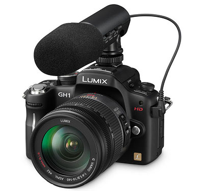

|
第三章：买什么样的相机去旅游
本章目录
第一节：旅游数码相机推荐型号列表
第二节：追寻完美的旅游相机
第三节：必不可少VS可有可无的旅游摄影附件
第四节：数码相机的分类
第五节：关于防抖
第六节：小数码DC购买的几个原则
第七节：数码单反机身的选择
第八节：数码单反镜头的选择与推荐
第九节：商场购买注意事项
结束语
第一节：旅游数码相机推荐型号列表
表3-1
|
旅游拍摄需求 |
推荐相机类型 |
推荐型号 |
推荐原因 |
|
A，以游玩为主，多数照片为家庭到此一游，顺便拍几张风景 |
任何一个小数码DC傻瓜机
，或者好点的手机也行（摄像头需带自动对焦功能） |
松下Panasonic
Lumix LZ8 |
便宜又好用。图像质量好，32-160mm焦距不错 |
|
Nokia N82手机 |
500万像素自动对焦手机兼有GPS和WiFi上网功能 |
|
B，需要拍摄漂亮的夜景 |
任何一个带M档手动曝光功能并能手动调节ISO的小数码
相机 |
松下Panasonic
TZ7 |
25-300焦距非常好，是旅游一镜走天涯最佳选择之一。光学防抖。高清摄像功能。 |
|
富士F200EXR |
高ISO图片质量好。28-140mm的镜头焦距非常好。 |
|
C，如果你对图片质量有进一步的要求，或者你经常在弱光下高ISO手持拍摄
|
任何一台数码单反DSLR |
佳能450D套机 |
入门级DSLR差别不大，随便买哪个都不错，尼康和佳能出货量大，镜头比较好配一些。SONY的A200套机售价不到三千元人民币。 |
|
尼康Nikon
D40x套机 |
|
SONY A200套机 |
|
尼康Nikon D700加24-120mm
VR镜头 |
两万元预算的最佳选择之一，D700操作手感极好
，高感光度举世无双。全幅DSLR最佳选择之一。 |
|
佳能5DII加EF24-105IS镜头 |
两万元预算的最佳选择之二，全幅DSLR最佳选择之一。解像度超高，高感光度非常好。 |
松下Panasonic
Lumix DMC-GH1
|
一万元预算最佳选择。非常轻巧（机身不到400克）。旋转液晶屏构图方便
。1080/24P高清摄像天下无敌。 |
|
索尼SONY α700加16-105镜头 |
8000元预算的最佳选择。性价比非常高。机身CCD防抖。相当于24-160mm的焦距是旅游摄影一镜走天涯之最佳选择之一 |
（声明：列表型号只是我个人喜好）
2010年5月4日：请忽略以上型号推荐。这些是截止2009年的数据。这两年相机型号变化太大，以上推荐都已过时，我希望年底能有时间更新。
第一个问题：多少万像素的相机比较好？此问题被最多人问起。第一章说过，以前我们常用的135胶片其解像度大致相当于800万像素的数码相机。现在是公元2008年，市售数码相机很少有低于700万像素的，所以任何数码相机都足够旅游用，我指的是旅游回家冲印或打印照片，以及提供给旅游杂志使用。美国国家地理杂志95%以上的图片都是用135相机拍的。在使用胶卷的年代如果你没有觉得135胶卷不够用，在数码时代的2008，你也不必担心数码相机的像素不够用。
上表情况A其实是我废话了，每个游客都至少有一个小数码傻瓜机或拍照手机。上表所列其实就是一个问题，除了小数码傻瓜机，你是否还需要一个能手动曝光的小数码，或者更进一步，买个DSLR数码单反？
我的回答是：全自动傻瓜小数码相机街头纪实没有任何问题，但拍风光还是不行，因为傻瓜机没法手动设置ISO，光圈和速度，很难拍出漂亮的夜景。但有M挡手动曝光功能的小数码相机是完全能够胜任旅游摄影任务的。请注意任务二字，我的意思是说完成绝大部分职业旅游摄影
专题都够了，除非你在夜晚的街头长期坚持不用三脚架（这意味着大量使用ISO800以上的感光度），那就还是需要一个数码单反，因为小数码ISO800以上图片质量差到几乎不可用。虽然很多小数码都号称ISO1600甚至3200，但这高ISO都是摆看的（出于市场营销目的），说得不好听那都是骗人的。
在摄影这个圈子里，图片质量高意味着体积大，重量大，价格贵。如果你愿意一边旅游一边锻炼身体，口袋里钱多，那买个数码单反不是问题。这里锻炼身体意味着负重行军，因为单反机身加上几个镜头，附件，三脚架等很容易超过十公斤。口袋里钱多意味着很多，
因为数码单反及其镜头的购买是个无底洞：佳能1ds
Mark
III（俗称“马大三”）机身即需人民币六万，如果配齐从鱼眼超广角到600mm远程大炮镜头，还需要人民币三十万元。相反小数码DC比较厚道，又小又轻，一两千元左右，最好的也就四千块钱
，由于镜头无法更换所以小数码DC的购买属于一步到位，它断绝了继续花钱升级的可能性 -
除非你卖了它去买新的。所以即便有数码单反DSLR，小数码也搞一个吧（不贵），嫌DSLR麻烦时就把它扔在酒店（注意防贼），揣个DC出门泡吧。而且DC也可作DSLR的备用相机，在重要的出国旅游时，万一DSLR出故障也不至于捶胸顿足了。
第二节：追寻完美的旅游相机
如果有朋友问“我想买一块手表，买哪个好”， 历尽千辛万苦一起分析了两个小时，终于你推荐了一款卡西欧Casio
baby G，而你的朋友说：谢谢你，Baby
G很好，但我从小不喜欢圆形，我要一个方形手表。当场晕倒，几个小时白费了。
买手表这问题看似简单，要准确回答却让人抓狂。首先是你买表干啥？纯粹看时间？运动记步？时装的装饰？收藏与保值？显阔？然后要看你预算多少，因为一块表的售价可以从一美元到十万美元。最后手表这东西还牵涉到个人的审美观和颜色喜好，而这些东西根本无道理可讲。
我是一个热心肠的人，以帮助别人为乐。但当我被问“买什么相机”我一般都拒绝回答。因为这问题和买手表一样不是半个小时能讲清楚的。尤其如果这位朋友对摄影常识一无所知，不知道什么是光圈和速度，那情形简直就是鸡同鸭讲。我很原意帮助别人，但如果每帮助一个需要几个小时，每天我也不用干别的事了。希望大家看了这篇购机指导的小文之后能做出自己的选择。
人生就是选择，选择就是妥协。如果我坚持找一位美丽，有钱，勤劳，智慧型的太太，精通英文，床上技巧高超，下床又做得一手好菜同时又是钢琴高手，我恐怕一辈子要打光棍。同理，这个世界上不存在一台完美的旅游数码相机。
就风光摄影来说，如果完美的图片质量是唯一的追求目标，那今天我们在这里讨论数码相机纯属浪费时间，我们应该每个人扛一台巨大的座机去旅游，这种座机的底片有8x10英寸
或者更大，照片质量巨好无比，解像度超过最贵的数码单反十倍以上。但这种巨型座机每拍一张需要至少三分钟的准备时间
，没有自动对焦，没有自动测光。图片质量举世无双了，但这种座机明显不适合大众旅游。
说到旅游，轻装前进是第一重要的，如果你需要便携性好（能塞进衬衣口袋里），那就不可能买数码单反只能买小数码DC，而小DC的图片质量在高ISO下是惨不忍睹的；数码单反能解决ISO400以上图片质量问题，但你必须承受数码单反比DC贵得多的价格，大得多的体积和重量。
在数码单反镜头的配置上我们也面临同样的难题与妥协。定焦镜头光学素质最好，但携带一大堆丁丁当当的定焦头严重不利于旅行，我们只得选择变焦镜头。变焦镜头有轻便的，光圈较小，光学素质稍差，但大光圈变焦头又大
又重，这就要看个人的体能来取舍，因为世界上根本没有又轻又小光圈又大的变焦镜头。即便你身强力壮，还有一个钱的问题，恒定F2.8大光圈的防抖望远镜头没有低于人民币一万元的。
关于摄影器材的价格有一点要强调，付出与收获是不成正比的，而且你付出得越多收获越少。打个比方，一个六千元的镜头其综合性能（解像度，抗炫光能力等）可能只比一个三千元的镜头好10%，而一万两千元的镜头比那个六千元的提高可能还不到5%。是否值得花大价钱因人而异，这个世界上富有的完美主义者总是有的。
个人的收入和体力不同，所以旅游摄影器材的选择没有标准答案，个人必须先掂量一下口袋里的钞票，然后到摄影器材店掂掂相机和镜头的份量，看看自己长途旅行是否背得起。
第三节：必不可VS可有可无的旅游摄影附件
A，必不可少的旅游摄影附件
除了相机本身，我特别强调以下四种摄影附件：
1，
三脚架。好脚架胜过好镜头。没有大型三脚架就不要谈风光摄影，免得让人笑话。而且三脚架必须配优质云台。
2，
圆形偏振光滤色镜，简称偏振镜，英文简称CPL(circular
polarizing filter).
3，
快门线
4，
充电器，备用电池和4G以上的备用存储卡。
以上四种附件除了三脚架外都不存在重量的问题，无论如何是要和手机钱包一起携带的，也就是说要牢记：没有CPL、快门线、备用电池和存储卡我就不出门旅游。
三脚架出门的时候一定要带上，克服困难也要带上，除非你从不拍风光和夜景，也从不和家人一起合影。
三脚架和云台一般也就是两公斤，坐火车上飞机作为行李托运，或驾车远游时放在行李箱，一点也不麻烦。
如果你实在嫌麻烦，可以在到达景点后把三脚架留在酒店里，但自驾车或者搭乘旅游大巴时一定要随车携带。我自己无论白天黑夜都随身带着三脚架。为什么：
1，
三脚架可作防身武器，特别是在治安欠佳的景点。优质三脚架配优质铝镁合金云台，在贼人的头上砸个大窟窿是没问题的；
2，
三脚架还可作拐杖或者扁担使；
3，
方便自拍以及家人合影，使你不再咬牙切齿。没有三脚架你可以请别人拍，但很多时候那人拍得非常烂，不是人被腰斩就是关键景物没拍进去，你一边恨得咬牙切齿一边还得陪笑脸谢谢人家；
4，
风光片经常需要用到大景深，光圈一般在F16甚至F22，而且拍摄风光片必须使用ISO100最低感光度，此时即便是在白天，很多时候快门速度将在1/10秒甚至更慢，没有三脚架是万万不可的；
5，
对于日出，傍晚以及夜景的拍摄，没有三脚架还不如在家睡觉，省得浪费时间。
很多促销活动都买相机送三脚架。这些三角架又小又轻，小数码DC自拍用还马马虎虎，数码单反装在那些免费送的三脚架上，风一吹就晃，还不如不用。三脚架当然是越大越重越稳，但旅游摄影不是影楼人像，太重的三脚架显然不现实。我们需要又轻又结实的三脚架，最佳选择是碳素（碳纤维）材质的三角架，其次是铝合金三脚架。碳素三脚架价格昂贵，最便宜都要近人民币一千元，但三脚架多花点钱绝对值得。数码相机和电脑一样，过两年就不值钱了，但一个优质三脚架可以用二三十年，依然结实，也不会过时
。
我认为好三脚架比好镜头还重要得多。风光摄影特别是夜景，一个几百元的套机镜头（所谓的狗头doggy
lens）架在稳定的三脚架上用中等光圈来拍，比一个上万元的镜头用最大光圈手持拍摄的效果还要好得多。最好的三脚架也不过四千多元，对比那些动则上万的镜头，谁更值得？
三脚架一般都和云台分开卖。云台是连接三脚架和照相机的装置，非常重要，三脚架再结实，如果云台很差，一样不稳。所以在买三脚架的时候就要一并考虑云台，架子加云台才是一套完整的三脚架系统。
三脚架这东西也是一分钱一分货，曾经我认为人民币600以下不会有结实的三脚架，但2008年1月我在市场上发现一款美富图MeFOTO
B-580的三脚架只卖人民币380元，此脚架是仿Gitzo设计，出人意外的结实。另发现伟峰Fancier
FT-6663H的小球形云台也很好用，只要不到人民币200元。这一套云台加脚架才五百多元，非常实用，推荐给大家。
购买注意事项：首先要考虑的是你最重的相机加最重的镜头一共多重，假如是3公斤，那就要买承重至少6公斤的三角架（也就是说两倍以上）。其次，云台也要能承重至少6公斤，不然这套脚架系统就不匹配。云台有三维云台和球形云台两种，各有所喜。三维云台比较适合风光摄影构图，但携带和使用不如球形云台方便。至于云台应该花多少钱，一般来说，如果你花两千元买三脚架，就应该花一千元买云台。
关于购买多高的三脚架：将架子腿全部展开，装上云台和相机，其高度应该正好能平视取景。请注意这是不升脚架中轴的高度。在使用三脚架时尽量不要升中轴，中轴升起会增加不稳定因素。
买云台一般都会送一块快装板，如果你有几个重量超过一公斤的镜头（这种镜头都有脚架环），应该给每个脚架环配一个快装板。
因为我旅游时95%以上的时候都带着三脚架，如何携带是个大问题。如果三角架买的时候没送包，那就一定要买一个好点的三脚架包，这个包要能装下连云台的三脚架，还要有斜背的肩带。但我一般不把三脚架背在肩上，我用的是一个可以外挂三脚架的双肩背摄影包，然后三脚架装包挂在背包上，一则可以保护脚架，二则尽量隐蔽，我不想别人认为我是职业拍照的。用一般的旅游背包也可以，这样更隐蔽，但其大小要能装下三脚架，至少也要能装下拆除云台后的三角架。
就目前来说，我推荐如下列表的三脚架系统：
|
三脚架（售价） |
云台（售价） |
推荐原因 |
|
捷信Gitzo1540T碳素脚架（4400元） |
冈仁波齐NB-2（1980元） |
非常稳定，非常轻巧 |
|
百诺Benro旅游天使套装A-268
M8三脚架+B-1云台（1200元） |
国产精品，轻巧而稳定 |
|
美富图MeFOTO B-580铝合金脚架（380元） |
伟峰Fancier FT-6663H（190元） |
便宜量又足 |
下面解释一下偏振滤色镜。在胶卷时代，风光摄影师都要随身携带大量的滤色镜，如中黄，浅红，灰渐变，星光镜等等，所以摄影背心都有很多口袋。在数码时代，除了偏振镜以外其他所有的滤色镜都可以用电脑后期制作来替代。偏振镜从古至今都是拍摄风光片必不可少的工具，它可以消灭玻璃和树叶的反光，使色彩更加浓郁，蓝天更加蓝，白云更加白，拍瀑布的时候还可以当中灰减光镜用，把流水拍得丝般顺滑，千言万语化作一句话：没有偏振镜就不要谈风光摄影
。
关于偏振镜还有一点很重要， 如果几个镜头的口径不一样，就要带几个不同口径的偏振镜。当然也可以只带一个偏振镜外加几个转接环，但转接环扭来扭去的麻烦，而且转接环往往会让原装镜头遮光罩无法使用。所以在购买DSLR镜头的时候就要
想到滤色镜口径的统一。 对于佳能Canon数码单反来说，EF17-40，EF24-105和EF70-200f2.8三支镜头覆盖了从17毫米超广角到200毫米长焦，它们的滤色镜口径都是77毫米。
下面解释一下快门线或遥控器为什么是旅游风光摄影必须的：
1，
我们都希望自己拍摄的风光图片如刀刻一般的锐利，所以相机千万不能震动。用快门线或遥控器拍摄能彻底消除手按快门时的震动；
2，
在弱光拍摄时经常需要曝光15秒以上，如拍摄夜色阑珊的车灯轨迹，用手按快门久了会手酸。如果拍摄星星的轨迹，曝光时间一般在一到四个小时，如果用手按快门，那不光会酸，手可能会断，后果很严重。
很多相机能同时使用快门线和遥控器，我一般推荐快门线。无线的东西总不如有线的可靠。摄影器材不在于它有多先进，可靠性是第一重要的。
关于备用电池和存储卡这就不必解释了，当然是多多益善。现在是2009年，
国产数码相机电池是白菜价，4G的SDHC卡还不到人民币一百元，多买几个吧。
B，可有可无的旅游摄影附件
a，UV镜。买相机的时候很多商家都免费赠送UV镜，说可以起到保护镜头的作用。这个免费UV镜最好直接把它扔了，因为劣质UV镜会把你拍摄的所有照片搞砸。如果你不相信，尝试一下隔着玻璃窗拍点东西。
我从来不用UV镜，我都是用遮光罩，它可以防止散射光进入镜头，也能起到保护镜头的作用。遮光罩比UV镜重要多了，99%的时候我都用遮光罩，它就和烈日下的太阳帽一样重要。
如果你一定要用UV镜或者保护镜，一定要购买Kenko
Pro1D级别以上的UV镜（售价人民币100多，要注意防伪，Kenko的假货很多），最好是多层镀膜B+W品牌的UV镜（人民币200到400多看口径不同）。总而言之，人民币一百元以下的UV镜或保护镜千万不能买。
b，闪光灯。外接闪光灯并非旅游摄影必需。风光摄影根本用不着闪光灯，小数码DC内置小闪灯有效距离不超过4米，外接大闪灯有效距离也在10米之内。如果拍风光可以用闪灯的话，这种闪灯有效距离至少也得500米吧？只可惜这种超级核动力闪灯目前还造不出来。经常看到体育馆演唱会闪灯四起，那都是浪费电，拍出来照样黑乎乎的。街头纪实抓拍我最忌讳闪灯了，因为我喜欢偷拍自然的表情。当然，夜晚合影以及逆光下补光，闪灯还是用得着的。我很少合影，逆光我一般手动进行曝光补偿，
如果一定要用闪光灯补光，相机内置的小闪灯也够用。如果要精简轻装，第一减掉的就是闪光灯。
c，最后说几句数码伴侣。这东西内置电池读卡器和硬盘，不用笔记本电脑就能把存储卡里的照片倒进硬盘。现在160G的硬盘才500元，我们算是赶上好时候了。但安全问题要注意，虽说硬盘一般不出问题，但硬盘里有移动部件，抗震能力差，一出问题就是毁灭性的，笔记本硬盘基本无法修理。想想
几十个G辛辛苦苦拍来的图片一旦丢失，我是跳楼还是上吊？所以我一般旅行都带10G以上的存储卡，尽量不用数码伴侣。实在要出远门，我就带上两个数码伴侣，互为备份。两个硬盘一起坏那是天亡我也，这种概率和中六合大彩应该差不多吧？
第四节：数码相机的分类
数码相机有几十个品牌几千个型号，总体来说可分为两类：小的，和大的。它们的主要区别见下表：
表3-2
| |
小型（DC） |
大型（DSLR） |
|
1，体积和重量 |
小/轻 |
大/重 |
|
2，镜头是否可更换 |
No |
Yes |
|
3，能否手动曝光 |
Yes/No |
Yes |
|
4，高ISO图像质量 |
差 |
好 |
|
5，感光芯片尺寸 |
小 |
大 |
|
6，操作的安静性 |
安静 |
吵闹 |
|
7，能否摄像 |
Yes |
Yes/No |
现根据上表逐点解释：
1，如果一台数码相机能够塞进裤子口袋里，这就是小型数码相机。否则称之为大型。小型数码相机体积小重量轻，简称小数码，英文叫DC
�C Digital Camera。大型数码相机绝大多数都是单镜头反光数码照相机，简称（数码）单反，英文是DSLR
�C Digital Single Lens Reflector。
一说到旅游，第一个要考虑的就是便携性。旅游相机必须体积小重量轻。从这点考虑我们应该毫无疑问地选择DC。
为什么取了单反这么古怪的名字，有双反吗？有。四十年前的人用双反相机居多。今天在二手相机店还能找到那种长方形的有两个镜头的相机，如中国产海鸥4B，还有禄来等其他品牌。这就是双镜头反光照相机，简称双反。这种相机上面那个镜头是取景用，下面那个镜头才是拍照用。
双反相机很笨重，镜头也不可更换。其实我们完全可以不需要取景的那个专用镜头，只要在镜头后面装一个反光板，光线就能通过反光板折射到取景框来取景，拍摄的时候反光板抬起，光线直射到胶卷（或CCD）上，这样一个镜头就能完成取景和拍摄两个任务。很快，体积小重量轻的单反SLR就取代了双反。
2，一般来说DC的镜头不可更换；镜头可以更换的都是DSLR。
小数码DC与数码单反DSLR最大的区别就于它们的镜头能否更换。可换镜头的DSLR优势是明显的，需要拍大场景的时候换上广角镜头，需要拍摄野生华南虎的时候就换上长焦（望远）镜头。小数码镜头不可更换，对超广角和超远距离拍摄就无能为力了。当然
有些小数码可以通过转接环外接广角或远摄镜头，但附加镜头又大又笨，小数码体积小的优势丧失殆尽，而且还会造成对焦困难以及图像质量下降。
可换镜头的缺点也显而易见，镜头都太重，不利于旅行。 而且镜头的购买是个无底洞，几万十几万很容易花完。所以有人说让一个男人破产的方法之一就是送给他一台单反相机。
3，能否手动曝光
如果只是家庭合影和街头纪实抓拍，我们一般不需要手动曝光。一旦说到风光摄影，特别是夜景，手动曝光就是必须的了，因为我们需要手动设置ISO到最低值（通常是ISO100或更低），光圈设置为中小光圈值，F8或者更小。
如果能在相机的主转盘上找到M这个大写字母，这台相机就是能够进行手动曝光的。
4，高感光度成像质量（ISO400及以上）
这个问题请参见第二章第一节：ISO与图片质量。
5，感光芯片尺寸
感光芯片是数码相机的心脏部件，大型和小型数码相机的心脏尺寸相差很大。尺寸越大的心脏越有力，所以面积越大的CCD成像越好。 这个问题请参见第二章第一节：ISO与图片质量。
今天市面上主流数码相机，不管是小数码DC还是单反DSLR，感光芯片都达到了1000万像素。但同样是1000万像素，绝大多数小数码相机的感光芯片(CCD)面积不过一粒黄豆大小。而数码单反的感光芯片CCD都比较大，其中最大的是全幅CCD。所谓全幅是相对以前的135胶卷而言，如果一台数码相机的感光芯片（CCD或CMOS）和以前的单张135胶卷底片一样大（24X36毫米），我们就称之为全画幅数码相机（单反），英文叫Full
Frame DSLR。
CCD越大图片质量越好，但CCD这个东西的价钱和液晶电视一样，面积越大售价越贵，所以数码单反一般来说都比小数码贵，全幅数码单反的价钱更是贵得惊人，2008年最便宜全幅DSLR是1200万像素的尼康D700，售价2000美元（约15000人民币）
�C 单机身，不包括镜头。
今天市售绝大多数DSLR都是非全幅的，我们把这种CCD称作DX或者APS尺寸CCD。尼康nikon的绝大多数DSLR都是DX格式的，例如D60，D80，D300，它们的CCD大小为23.7x15.7mm，约为全幅CCD面积的44%。佳能大多数DSLR尺寸还要更小一点，约为全幅CCD的40%，例如EOS450D，40D。
6，
操作的安静性
小数码DC没有机械式快门，曝光时间由电子电路控制，拍照是悄无声息的。有些人不习惯，所以DC都加入了模拟传统机械式快门的咔嚓或咣当声。模拟声响在中高档DC菜单里是可以关闭的。
数码单反沿用了传统单反的反光板和快门系统，拍摄的时候有明显的咔嚓声。这声音是无法消除的。毫无疑问静音拍摄具有优越性，因为在某些安静的场合比如话剧演出，快门声音是不受欢迎的。有些DSLR快门咣当咣当的动静很大，严重不利于偷拍。如果你在山上偶然遇到了野生华南虎，这时候你一定会痛恨快门声。
7，
能否摄像
绝大多数DC都有摄像功能。
这没有什么奇怪，很多手机的摄像功能也很不错。然而在过去，DC摄像的效果只能称为聊胜于无，最好的DC摄像也比不过两三千元的入门级DV摄像机。2005年以来，数码相机的摄像功能突飞猛进，有的甚至可以拍摄高清HD格式的录像，立体声录音，拍摄时可以变焦。小DC能录像，这是它最大的优势之一：如果周正龙在拍摄华南虎的时候手里不是佳能400D数码单反而是一台小数码DC，拍下一段老虎走路的录像，也就不会有人怀疑陕西镇坪县是否有老虎了。
 在2008年8月27日尼康公司Nikon发表D90数码单反之前，所有的DSLR都不能摄像
，只能拍静止的图片。D90永远改变了数码单反的世界，它以及随后发表的佳能5DII都具备了高清摄像功能，不过它们都没有自动对焦功能，很不实用。
2009年3月日本松下公司发布了一款革命性的数码照相机Panasonic
Lumix DMC-GH1（图：外接枪型麦克风的GH1），此机能拍摄1080/24P的高清录像，能自动对焦。当我第一次看到它的参数时，我搞不清楚到底它是一台能摄像的照相机还是一台能照相的摄像机。
数码单反的CCD尺寸大，
意味着低照度下不管是摄像还是拍照都拍录像的效果很好，而且数码单反是可以更换镜头的，广角长焦可随心所欲。要知道可换镜头的摄像机售价都在三万元以上。
所以能高清摄像的数码单反是一个重要的技术革命，几年之后也许摄像机和照相机终将难以区分。
----------------------------------------------------------
也许你已经发现我在上文中多次使用“绝大多数”“一般来说”等词语。因为数码相机的分类和特性都不是绝对的，相机界从来不乏一些另类，而且这些另类器材还特别值得我们注意，因为有一些很适合旅游摄影使用，例如：
1，
Panasonic
Lumix DMC-GH1。我还是要强调一下这台革命性的机器。严格的说起来它不是数码单反（单镜头反光照相机），因为其内部根本就没有反光板，它的电路和小DC是完全相似的，然而它的感光芯片是3/4系统规格的，比普通小DC大好几倍。这个四不像把数码单反和小数码DC的界限搞得越来越模糊了。
2，
适马
Sigma DP-1，这是一台可塞进衬衣口袋的小数码，但它采用的是一块DSLR级别的大型感光芯片，所以此机一宣布就在相机界引人瞩目，2008年初上市的售价7000人民币，比单反还贵。
3，
以莱卡M8以及爱普生EPSON
- RD1为代表的可换镜头旁轴数码相机，虽然不是DSLR，但都使用DSLR级别的大型感光芯片。这些旁轴数码价格昂贵，莱卡M8售价四万人民币，EPSON
- RD1售价近两万人民币，都没有自动对焦，属于怀古小众机型，不适合旅游摄影使用。
4，
以Nikon P90，Olmpus SP590，Panasonic FZ18等为代表的大变焦数码相机。这些相机长得一幅DSLR的样子，但它的镜头是不可更换的，用的也是黄豆大小的小型CCD，所以这些机型ISO400以上的图片质量差到几乎不可用。
但这些相机变焦范围巨大，尼康P90达到惊人的24倍光学变焦26-624mm。如果你不是经常在弱光下的街道抓拍，这些相机还是比较适合旅游用的，尤其适合远距离拍动物。
第五节：关于防抖
第二章介绍了安全速度原则：安全速度是焦距的倒数。有了防抖装置，则安全速度可以降低两档（或者三档），也就是说200mm镜头拍摄时快门速度低至1/50秒甚至1/25秒依然能够得到清晰的图片。
在光线不好的时候，相机有没有防抖有时成为一张图片清晰还是模糊的关键。所以防抖技术是相机史上最重要的发明之一。1995年，佳能公司推出了世界第一款带防抖的135单反镜头EF75-300mm
F4-5.6 IS，这“IS”就是图像稳定器（Image Stabilizer）。到目前为止，防抖技术已经演变成了三个类别：光学防抖、电子防抖和感光器CCD防抖技术。
所谓光学防抖就是镜头防抖，这种镜头里有一个探测器和一个浮动光学组件，探测器能够感知你手抖动的情况（方向和抖动力度），镜头里的浮动组件随之进行反向补偿，保证了图片的清晰。佳能把镜头防抖简称为IS（Image
Stabilizer），尼康把它简称为VR（Vibration
Reduction），适马Sigma把它简称为OS，松下简称为Mega O.I.S.，这些都只是名字不同，光学镜片防抖原理是一样的。
奥林巴斯和SONY（包括以前美能达）的数码相机则采用了另外一种叫CCD防抖的技术，手抖探测器不在镜头里而在机身里，而感光芯片CCD被安装在一个浮动支架上，同样能根据手抖的情况进行反向补偿。
2006年之前镜头防抖要技高一筹，可以降低安全速度三至四档（有厂家号称五档），CCD防抖只能降低两档。2007年随着Olympus
E3和SONY
α700新产品的推出，CCD防抖也达到（或者接近）了镜头光学防抖的水平。
我认为CCD防抖比较厚道，是正确的发展方向。CCD防抖意味着所有的
老镜头都自动获得防抖功能，而不管是佳能的IS还是尼康的VR，你必须购买新的IS或者VR防抖镜头。比如佳能EF70-200mm
F2.8，此头售价人民币8,500元，而它的防抖版EF70-200 F2.8
IS则售价高达14,000元，实在是太宰人了。
最后介绍电子防抖。电子防抖只出现在小数码相机里面，我还没听说哪台DSLR有电子防抖的。对电子防抖我也只有三个字：骗人的。
第二章的名词解释我们说过，光圈，快门和ISO三者联合决定曝光是否正确。光圈只有那么大，如果快门低于安全速度两档，电子防抖就是把ISO从100提高到400。
这样一来快门速度上去了，图片清晰了，但付出的代价是图片质量的严重下降。其实我们根本用不着这个电子防抖，在菜单里面人人都会调ISO。
结论：第一购买CCD防抖的相机，第二购买光学防抖的镜头，不买电子防抖的玩具。
第六节：小数码DC购买的几个原则
如果只是以游玩为主，多数照片为家庭到此一游，顺便拍几张风景，那任何一个小数码DC都是可以的。如果稍微讲究一些，例如以DC为主机（不想携带笨重的DSLR去旅游），那在购买DC的时候就要三思了。以下几点需要着重考虑：
1，
最好是体积小重量轻，以便塞进衬衣口袋里；
2，
必需有M档手动曝光或者A档光圈优先，必须能手动调节ISO，以便拍摄风光和夜景；
3，
最好能有28mm或者24mm广角，以便拍摄风光和建筑；长焦端一般200mm就够用；
4，
最好能使用双电源，平时能使用充电式锂电池，紧急时可用5号或者7号电池；
充电式锂电池充电快速，电量大，大多数数码相机都使用这种电池。但如果你去很偏远的山区或其他没有电的村子，无法充电就是一个严重的问题，没有电的相机就是一堆废铁。五号或7号电池随处可买，但不经用。如果一台相机两种电池都能用那是最理想。
5，
最好有RAW图片存储格式，方便调整曝光和白平衡；
这个问题已经在第二章第7节详细讨论过，RAW图片格式具有无可比拟的优势，除了文件大。对于小数码DC的RAW来说还有一个问题要注意：连拍速度够快吗？Ricoh理光GX100是少数能拍摄RAW图片的DC，但拍完一张之后要等5秒钟才能拍下一张。这还算好的，Olympus
SP560两张RAW之间要等15秒，等得人两眼发直，这种RAW功能就太不实用了，只能算better
than nothing.
6，
最好能用转接环使用滤色镜（特别是偏振镜），外接广角和长焦镜；
7，
最好是可旋转的液晶屏，取景和偷拍非常方便；
8，
最好有防抖功能（CCD或镜头防抖，电子防抖是骗人的）。
9，
ISO400以上的图片质量好。这就是说，尽量购买CCD面积大的。
但是很不幸，这个世界上没有一台DC同时满足以上9个条件。
如何取舍看个人需要。
第七节：数码单反机身的选择
经常有人说：这照片拍得真好，用很贵的相机拍的吧？佳能还是尼康呢？在我看来只有两种人能回答这个问题：神仙和神经。没有人能单凭一张冲印好的照片判定是用什么牌子的相机（和镜头）拍的。换句话说，任何相机都能拍得出来。数码单反品牌的选择这个问题并不重要，因为它们都能拍出
（好）照片。我对相机的品牌从来不看重。
不同品牌的数码单反机身都在一个技术等级上，半斤八两，很难说谁比谁先进，它们差别主要在于操作的手感和菜单的设计上，这些没有什么道理可讲，萝卜青菜各有所爱，所以才会有很多Nikon派或Canon派在论坛上吵来吵去浪费时间。
比机身更重要的是镜头的选择。也就是说镜头决定机身。有些特殊拍摄需要一些特定的镜头，如果这类镜头只有nikon有，那就只能选择尼康的机身，因为每个品牌镜头卡口不一样，不能互换使用。比如尼康的镜头不通过转接环是无法用在佳能机身上的，转接不但麻烦而且还往往使自动对焦失效，只能手动对焦，太不方便了。比如尼康有一款200-400mm
f4的恒定光圈远摄变焦镜头，如果装在D300上就是300-600mm的焦距（超级远程变焦大炮），极其适合非洲大草原上拍摄远距离野生动物。如果你特别喜欢这款镜头又特别喜欢去非洲拍狮子，那就只能买尼康的机身，因为佳能没有这样的镜头。
同样，佳能有些镜头Nikon没有，比拍建筑用的某些移轴镜头。
因为镜头卡口各品牌不通用，所以一定要根据自己的拍摄目的选择合适的镜头，再根据镜头决定机身。一旦你购买了Canon机身就意味着你被卖给了Canon，随着你以后购买的Canon镜头越多，转换到nikon系统的代价就越大。
上面所提的独特镜头只是个别现象。Canon,
Nikon等主要单反相机厂家的镜头产品线都差不多，都足够旅游摄影使用。所以买哪个品牌得数码单反去旅游都行。
到2008年初，全世界有8家数码单反厂家，它们是Nikon, Canon, Sony, Pentax,
Olympus, Panasonic, Sigma, Fujifilm。就旅游摄影来说我一般推荐Canon或者Nikon，不是因为它们机身特别好，而是因为这两家公司拥有最全面的镜头系列，其他镜头厂商推出新镜头的话首先都会推出nikon和canon卡口的。
数码单反机身价格从三千到五万多，大致可以分为三类，入门级的如Nikon
D60, Canon 1000D, Pentax K200D,
SONY α200,
Olympus
E410，这些套机售价都在人民币四千元左右，小巧方便，重量不超过600克，适合旅游用。价格在人民币5,000到16,000的是中级和准专业数码单反，这些包括五千元的Pantex
20D，六千元的Nikon D80，七千元的SONY
α700和Nikon D90，八千元的Canon
50D，一万元的Nikon
D300和Olympus
E3，这些机型重量在800克左右，体积比入门级单反稍大，便携性稍差但还不至于那么夸张，也适合旅游用。以上这些都是非全幅数码单反
。
17,000左右的价格区间目前三个全幅数码单反。SONY的A900和Nikon
D3x都有着135数码单反最高的2400万像素，但SONY A900售价只有Nikon
D3x的三分之一，非常超值，它还有独门武功 - 全幅相机唯一的CCD防抖。Nikon的D700有点像缩小版的D3，连拍稍慢，没了连体手柄，双卡存储，多了内置闪光灯，除此之外CCD和图像处理系统是一样的，也很超值。D700和D3共同的特点就是高ISO图片质量非常好，适合有全幅情结并且喜欢夜晚摸黑手持拍摄的朋友。佳能5DII有着接近A900的解像度（2100万像素），高ISO图片质量比D700稍差，但也相当接近，是一个折中方案，5DII的独门武功是高清摄像。
30,000元再往上走目前只有三种专业数码单反，Canon
1D MarkIII，全幅单反Nikon D3x和Canon1Ds MarkIII。这三种数码单反价格昂贵，由于竖拍手柄不可拆卸导致它们体积巨大，重量惊人，如果加上好点的镜头重量大多超过三公斤，不适合旅游用，喜欢一边旅游一边练哑铃的除外。
最后我谈谈全幅情结。很多摄影大侠都喜欢全画幅数码单反，因为全幅CCD面积大，如果同为1000万像素，全幅CCD的成像（特别是高ISO）当然比非全幅CCD好。但全幅数码单反的价格实在太贵了。是否值得多花几倍的钱换取ISO1600略好的图像质量，这是一个见仁见智的问题。
前文说过，非全幅数码单反目前已不存在解像度不够的问题，主流的非全幅CCD都在1000万像素以上了。在我看来目前非全幅数码单反最大的问题有两个：一是取景器太小，特别是入门级的，如Olympus
E410/510等3/4系统的数码单反，取景器之小如同井底观天，小到几乎难以判断手动对焦是否对准了，感觉很不爽。但中级（或称准专业级）数码单反通过采用较好的光学五棱镜和加大取景器放大比，已经基本解决了取景器不够明亮和面积小的问题。
非全幅数码单反的第二个问题是非全幅专用镜头选择不够多。有全幅情结的摄影大侠大多有胶片时代遗留下来的镜头，但因为非全幅数码单反有1.5以上的镜头转换系数，20mm的广角镜头就变成了35mm，等于没有了广角，这在以前是一个严重的问题。但各厂家近年陆续推出了非全幅数码单反专用镜头，比如Nikon的DX以及Canon的EFS系列，广角的问题已经得到了解决。不过有一个问题要注意，胶卷时代原有的135镜头用在非全幅数码单反上没有问题，但DX及EFS等非全幅数码单反专用镜头是不能反向用在全幅数码单反以及胶卷135单反上的。如果你计划几年后升级到全幅数码单反，目前花大价钱购进大量EFS或者DX镜头是否值得，这个问题就需要斟酌了。如果你铁了心准备把非全幅单反一直用下去也未尝不可，取景器太小的问题已经解决，EFS和DX镜头虽不多但也已经成系列（以后还会越来越多），从广角到长焦各档次都有，体积重量相对全幅镜头要小，旅游用蛮合适的。
|
级别 |
型号 |
优点 |
缺点 |
人民币参考价格 |
|
入门级 |
Nikon
D40 |
600万像素，世界最便宜的数码单反之一，套机售价低于三千元人民币。轻巧便携，适合旅游用。 |
1，只能使用镜头内置对焦马达的新款AFS镜头，不支持老款nikon镜头。如果你新加入单反大军，没有库存老境头，则此问题不大
。2，没有反光板预锁功能 |
3000套机 |
|
Nikon D60 |
1000万像素，轻巧便携，适合旅游用 |
同上 |
4000套机 |
|
Canon 450D |
1200万像素，轻巧便携，适合旅游用 |
1，手柄太小，男士握着不爽。2，取景器成像略嫌小。 |
4800套机 |
|
Pantex
K200D
|
1000万像素，轻巧便携，适合旅游用。 |
取景器成像略嫌小。 |
3000机身 |
|
SONY α200 |
1000万像素，世界最便宜的数码单反之一，轻巧便携，适合旅游用 |
取景器成像小。 |
3000机身 |
|
Olympus E410/510 |
1000万像素，机身防抖，轻巧便携，适合旅游用， |
取景器成像太小以至于手动对焦困难。CCD动态范围小，高光易溢出。 |
4600/5600 |
|
中级 |
Pantex 20D
Samsung GX20 |
机身基本防水防尘，CCD防抖，1400万像素，
性价比高。轻巧便携，适合旅游用 |
这个价位好像没有什么缺点 |
6000套机 |
|
Canon 50D |
1400万像素，轻巧便携，适合旅游用 |
高ISO居然比其前身40D差 |
7000套机 |
|
Nikon D90 |
1200万像素，轻巧便携，适合旅游用，有高清摄像功能 |
这个价位好像没有什么缺点 |
7000 |
|
Panasonic
GH1 |
1200万像素，轻巧便携，适合旅游用，可翻转的LCD加实时取景Live
View非常实用，像DC一样拍照。高清摄像功能强大 |
镜头相对难配；性价比差。 |
1500美元 |
|
Sigma SD14 |
独特的Foveon X3感光芯片，色彩非常好。适合旅游用。 |
1.7的镜头转换系数，CCD比较小，高ISO图片质量相对较差 |
8000 |
|
准专业级 |
SONY
α900 |
全幅数码单反，CCD防抖，2400万像素，
性价比超高。适合旅游用 |
RAW图片被做了降噪处理，不完全是RAW。高ISO噪点比5DII差。 |
16000机身 |
|
Nikon D300 |
1200万像素，取景器巨大，操作手感极好。适合旅游用。 |
除了体积偏大好像没有什么缺点 |
10000机身 |
|
Fujifilm S5 Pro |
独特的Super CCD感光芯片，色彩好。适合旅游用。 |
性价比差 |
10000 |
|
Canon 5DII |
最便宜的全幅DSLR之一，高ISO图片质量好，解像度高 |
操作手感稍差，连拍速度稍差。没有内置闪光灯。 |
16000 |
|
Nikon D700 |
ISO25600全球无敌。等于是D3的缩小版（无手柄），但价钱只有D3的一半，非常超值。 |
基本没有缺点，除了像素稍低。 |
16000 |
|
专业级 |
Canon 1D MarkIII |
每秒十张的连拍，适合运动摄影 |
重量不适合旅游摄影。太贵了。 |
28000 |
|
Canon1Ds MarkIII |
佳能的顶级旗舰DSLR，我没有话说 |
重量不适合旅游摄影。太太贵了。 |
49000 |
|
Nikon D3 |
ISO25600全球无敌。 |
重量不适合旅游摄影。太贵了。 |
28000 |
|
Nikon D3x |
Nikon的顶级旗舰DSLR，我没有话说 |
重量不适合旅游摄影。太太贵了。 |
57000 |
第八节：数码单反镜头的选择与推荐
1，关于焦距段：
旅游摄影常用焦距最广很少广过20mm，长焦很少超过300mm。我本人旅游常带三个镜头，它们是Canon
EF28-135IS标准变焦头，Sigma17-35mm广角以及Sigma
70-300mm长焦。总结近几年上万张旅游照片，其中大约92%是用28-135mm这一支镜头拍的，有5%是用70-300mm长焦镜头，剩下3%用17-35广角镜。总结了这个规律之后，我现在短途旅游想偷懒就只带28-135一个镜头了。
这个故事告诉我们，如果你不想负重行军，那就只带一个标准变焦镜头；如果你钱只够买一个镜头，也先买标准变焦，它可以满足你90%以上的旅游摄影需要。
2，关于定焦和变焦镜头
单反镜头可分为两类，一是定焦镜头，二是变焦镜头。定焦镜头光圈大，成像好，变焦镜头光圈小，成像稍差。
旅游第一要考虑的还是方便和轻装。所以一般不考虑定焦镜头。以我常用的Canon
EF28-135IS来说，需要6支定焦镜头才能覆盖同样焦段，它们是：28mm，35mm，50mm，85mm，105mm和135mm。
定焦头的光学素质最好，但一堆定焦镜头丁丁当当的实在不便携带，换镜头也麻烦，而且相机CCD换镜头时容易进灰尘。论价钱这六支定焦头加起来能买三个EF28-135IS了，而且定焦头严重不利于街头抓拍，换镜头最快也得几秒钟吧，等你换好镜头，那决定性瞬间和人物早没影了。
3，关于标准变焦镜头（标变）和套头
我常用的标变是Canon
EF28-135IS。解释一下标准变焦镜头。135胶卷相机的标准镜头（标头）是50mm（视角45度），所以任何包含45度视角的变焦头都可称为标准变焦镜头。
对初次购买DSLR去旅行，我推荐购买套机捆绑销售的标变，也就是机身加套装镜头（简称套头）。扣除机身这些套头只售几百元，
等于半买半送了。套头又小又轻，重量不超过300克，背包旅游轻装第一，如果只打算带一个镜头出门，最合适的就是套头。 以后升级了这套头卖二手也亏不了几个钱。
佳能400D和尼康D40x套装18-55mm镜头，大致相当于传统135相机的28-85mm，这个焦距段是最常用的，涵盖28和35mm小广角、50mm标头以及85mm小长焦。不少品牌的DSLR还推出双镜头套装，除了18-55mm标准变焦镜头，另外奉送一个50-200mm的远摄镜头，价格只比单镜头套机贵一千元，相当划算。
表3-3：佳能Canon原厂标准变焦镜头
| |
人民币售价 |
适合机型 |
点评 |
|
EF28-105 |
1,500 |
5DII等全幅数码单反 |
价格便宜，大光圈解像度稍差 |
|
EF24-85 |
2,500 |
5DII等全幅数码单反 |
价格便宜，轻巧，成像优秀，有广角24mm,旅游推荐 |
|
EF28-135IS |
3,500 |
5DII等全幅数码单反 |
成像优秀，防抖，旅游推荐 |
|
EF24-105L IS |
6,500 |
5DII等全幅数码单反 |
L级镜头成像优秀，防抖，有24mm广角，旅游推荐 |
|
EF24-70L |
9,500 |
5DII等全幅数码单反 |
L级镜头成像优秀，贵，重一公斤，虽有24广角但长焦不够，不适合旅游 |
|
EF-S18-55 |
600 |
50D
450D等非全幅数码单反 |
450D的套头，便宜，仿佛不要钱，成像马马虎虎，轻巧，适合旅游 |
|
EF-S17-85 |
3,500 |
50D
450D等非全幅数码单反 |
防抖，旅游最佳选择之一 |
|
EF-S17-55 |
6,500 |
50D
450D等非全幅数码单反 |
全程恒定F2.8大光圈，成像优秀，价钱稍贵，旅游用长焦略嫌不够 |
|
EF-S18-200 |
3,800 |
50D
450D等非全幅数码单反 |
防抖，有长焦，旅游最佳选择 |
|
EF17-40L |
5,500 |
佳能数码单反 |
L级镜头成像优秀，用在5D等全幅数码单反上是非常优秀的广角变焦镜头（不是标准变焦）。用在40D和400D上相当于27-64mm，属于标准变焦但长焦端不能满足旅游需要。 |
以上五只EF镜头（蓝色区）适合用在佳能的135传统胶卷相机以及全画幅数码单反相机上，如果用在非全幅数码单反上，其焦距要乘以一个1.6的系数，原EF28-135mm标变就成了EF45-216mm。长焦端从135mm变成了216mm，这当然大受欢迎，但广角从28mm变成了45mm，这等于是没有了广角。在旅游摄影中因为拍摄大量的风光，广角往往比长焦还重要，所以，以上所提的五个全画幅标准变焦镜头适合用在Canon5D和1Ds系列全幅数码单反上，不适合用在佳能400D和40D等APS画幅的数码单反上。实际上EF24-105IS本身就是5D的套装镜头
（但这个套头贵，是专业级L镜头）。
标准变焦镜头是至关重要的，90%以上旅游图片都是标变所拍。我时常梦想一支完美的旅游标准变焦Canon镜头，它具有24-200的焦距，全程恒定F4光圈，重量不超过600克，价钱不超过5000元。可惜这样一支镜头要不知道哪一年才能实现。目前我们只能在表3-3所列的9种镜头里面选择，妥协的结果：对于5D等全幅数码单反推荐24-105和28-135两只旅游镜头，对于400D和40D等APS尺寸的数码单反，17-85为目前最佳旅游镜头。
4，关于光圈的大小
毫无疑问大光圈镜头优势明显，进光量大利于防抖，而且拍人像时虚化背景好（大光圈小景深）。但大光圈镜头又重又贵，如果你身强力壮又钱包鼓鼓，当然买大光圈镜头。我身体不好钱也不多，所以只能买小光圈镜头。
就风光摄影来说，几百元和上万元的镜头区别不大，反正都以F11/F16等中小光圈拍，而且多数用三脚架。大光圈镜头的优势在弱光手持拍摄。我没有大光圈镜头，只能靠提高ISO来补偿。好在数码单反ISO100和400图片质量相差
接近，问题不是很大。但虚化背景小光圈就无法补救，只能后期调图时在Photoshop里手工局部虚化。
 5，关于Nikon的DX，Canon的EFS等非全幅数码单反专用镜头系列 5，关于Nikon的DX，Canon的EFS等非全幅数码单反专用镜头系列
再次重申：Canon的EFS广角镜头不能用在全幅数码单反以及原135胶卷单反上，否则后果很严重，因为EFS镜头后组镜头凸出，原135胶卷单反的反光板拍摄时会打到后组镜片上，双双阵亡，损失惨重；
Nikon的DX镜头虽然可以用在全幅数码单反以及原135胶卷单反上，但拍出来图片四周全是黑圈。参见左图，大红圈是原135相机镜头成像圈，小红圈是DX和EFS镜头成像圈，此圈无法覆盖35mm底片，所以黑圈不可避免。
6，关于副厂镜头
佳能尼康等数码单反厂家一般都同时生产镜头，这就是所谓的原厂镜头；但也有些光学器材公司很少生产或不生产机身，专门制造镜头，如腾龙，图丽，适马等公司，它们所生产的镜头就称为副厂头。一般来说，同一规格的镜头日本原厂的比日本副厂的要好，但原厂头一般要比副厂头贵40%以上。
是否购买副厂镜头看钱包决定。
有一点要说明，腾龙Tamron、图丽Tokina和适马Sigma都是日本副厂镜头，它们相对便宜。但也有一些副厂镜头比原厂的还要贵/好，比如著名的德国Zeiss蔡司公司为SONY单反生产的镜头。德国货从来不便宜。
7，数码单反旅游镜头推荐型号列表：
|
型号 |
标准变焦 |
长焦 |
广角 |
定焦头（非必须） |
|
Canon 1000D/450D |
购买套机（EFS18-55或者EFS17-85IS） |
EFS55-250IS，钱包鼓者推荐EF70-200 F4L（IS） |
EFS10-22，钱不够用可考虑副厂Sigma
10-20 HSM |
EF50 f1.8标头 |
|
Canon 50D |
购买套机（EFS18-200IS）
钱包鼓者推荐EFS17-55F2.8IS |
EFS55-250IS，钱包鼓者推荐EF70-200 F4L（IS） |
EFS10-22，钱不够用可考虑副厂Sigma
10-20 HSM |
EF50 f1.8标头
腾龙Tamron
90mm微距头 |
|
Canon 5DII |
购买套机（EF24-105 F4L IS） |
EF70-300IS，钱包鼓者推荐EF70-200 F4L IS
擅长负重者可考虑EF70-200
F2.8L（IS）
或EF100-400L |
EF17-40 F4L |
EF50 f1.4标头
Canon 100mm微距头
|
|
Nikon D60/D40/x |
购买套机（NIKON
AF-S DX 18-55） |
NIKON AF-S DX VR55-200mm f/4-5.6 |
副厂Sigma
10-20 HSM |
50F1.8标头 |
|
Nikon D90
Nikon D300 |
NIKON AF-S 18-200
DX VR |
副厂Sigma
10-20 HSM
钱包鼓者考虑Nikon
AFS DX12-24 |
50F1.4标头
AFS VR105微距 |
上表可以看出，旅游摄影对器材（特别是镜头）的要求并不高。旅游摄影有两个重点，风光和人文。就风光摄影来说，大多时候都是把相机架在三脚架上用F11或者F16的中小光圈拍摄，一个几百元的套头和一个上万元的镜头在中小光圈的成像区别不大。至于人文摄影，关键不在你相机有多好，而在于你手上有没有相机。图片质量之类统统不重要，重要在于你拍到没有，有没有抓到那决定性瞬间。所以我才在本章开头推荐Nokia的N82手机，
拍到了就算你狠。任何时候手上都有相机才是人文纪实的王道。
第九节：商场购买注意事项
购买数码相机和购买手机一样要做好功课，否则多花钱还办不好事。以下几点供参考：
1，
绝对不能去大百货公司买相机，那些地方宰人没商量；
2，
正确的购买地点是电脑城和婚纱摄影器材城；
3，
购买时必需货比三家，最少问三家以上卖同样相机的商店，防止有不良商家恶意报高价；
4，
相机的价格在网站上已经比较透明，奸商会在附件上想方设法赚你的钱。所以我建议不在相机店购买存储卡，备用电池，相机包，三角架。在电脑城或摄影器材城转一圈，专业卖这些附件的商店到处都是，货比三家不吃亏。若有商家相机报价很低，他准会给你搭售很多附件，如果你只买相机不买任何附件，他一定会给你报一个新的价格。
5，
购买前需上网查价格，中国大陆的用户可上艺联相机行，锐意相机行，这两家网上商店价钱比较公道，不想跑路的话可直接邮购。淘宝www.taobao.com
网的价格也可作为参考，但淘宝上的报价比较离谱，那里的最高价相当于百货公司价，最低价属于骗子公司，需去除最高价和最低价取中间值。另外我强烈建议访问www.it168.com
和
www.dpnet.com.cn
这两家网站察看市场行情。还可以去色影无忌
www.xitek.com
以及蜂鸟网发帖子问行情。海外的用户建议访问亚马逊
www.amazon.com
和www.dpreview.com
察看美国和欧洲市场行情。
6，
如果你做好了功课，购买时要意志坚定，坚决购买自己已决定的目标型号。有些不良商家会说你要的型号没货，建议你购买其他型号，我建议你转身走人。很可能奸商的建议有猫腻，你又不熟悉这些不良商家推荐的新型号之详情，非常容易挨宰。
7，
购买时要仔细查看是否有优质印刷的简体中文说明书（用户手册），如果只有繁体中文或者复印的简体中文说明书你应该转身就走。这种相机不是水货就是翻新货。另外要对照防伪号码打电话确认是否为中国大陆行货。
但水货一般来说不是假货，如果你原意冒险抛弃一年保修，也可购买水货。
8，
购买时要仔细对照包装盒里的装箱单（也有的装箱单印在说明书的首页或尾页）一一查看附件是否齐全。特别要注意电池，如果电池上的字体歪歪地印刷不好，那原装电池一定被奸商掉包了，这里面利润巨大，原厂电池售价三四百，劣质国产电池只有几十元。
9，
购买时仔细查看外包装是否良好，没有卷折和明显的损毁，里面的说明书也必须像一本新书，不能有任何卷折，否则有可能是翻新货，也有可能是柜台展示品，已经被无数多人摸过，玩过。
10，
仔细查看相机是否外观和漆水完好如新，还要仔细查看螺丝是否有动过的微小痕迹。
11，
上好电池试拍几张，然后放大仔细检查。贵重相机最好携带笔记本电脑查看图片。
12，
我不建议去香港或海外购买，因为保修会非常麻烦。去海外买和购买水货没有什么区别，反正回国都无法保修。
13，
记得索要正规含税发票。有些品牌相机需要正规发票才能保修。有商家说如果开发票需要加价7%，这是无稽之谈，最多加3%。另外需要防假发票。对于不需要正规发票也能保修的品牌，开普通收据盖好章就可以了，没必要多花3%的钱。
------------------------------------------------------------------------------------------------------------------
本章结束语
这篇购买指南差不多近万字，之所以拖了这么久才写完是因为我本人并不是技术狂也不是摄影器材收藏家，我对图片本身更有兴趣，摄影器材只是我的工具。每次看到那些震撼的照片我都在想那作者本人是怎样用心灵去感受，然后再用镜头语言将这感受表现出来的，我并不关心他用的是什么相机和镜头，也不关心光圈和快门等技术数据，就如我看《红楼梦》时并不关心曹雪芹用的是什么毛笔，中楷还是小楷。
2002年我在云南和西藏用的是Canon
G1，一款古老的300万像素小数码DC，这古老机器拍的照片已在书籍和杂志上出版多次，我甚至曾用150万像素的图片（G1图片裁减一半）插值放大到19寸来做展出。2008已是数码相机的成熟期，现在任何一款入门级DSLR用5年前的标准来看都属于石破天惊之作。对于器材我们不应该再抱怨
。
不管牛头狗头，最重要的还是镜头后面那个人头。如果一定要说器材，就风光摄影来说一个摄影者是否尽心主要看他是否总带着大中型三脚架，就人文纪实来说我主要看他在上厕所的时候是否也带着小傻瓜机。只要自己尽心，什么相机都能拍出好照片。
第三部分完，请点击以下链接继续：
|